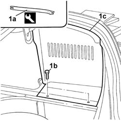

7040B17 Luggage compartment/load platform side trim flap (one) - Replace
- Path
- Procedures > 70 FITTINGS > 7040 BODY INTERIOR UPHOLSTERY AND TRIM > 7040B LUGGAGE COMPARTMENT AND LOAD PLATFORM TRIMS > 7040B17 Luggage compartment/load platform side trim flap (one) - Replace
- Kind
- repair procedure (removal / refitting; the operation number is the code)
- Applies to
- all engines; all production periods
- Interactive page
- https://sloeber94.github.io/elrnDB-lThss/en/#/113582
Applies to: all engines; all production periods
 Removing
Removing
 Refitting
Refitting- Open the boot lid.
1. Release the retaining buttons (1b), using the tool (1a), and remove the flap (1c).
 | Description | Code | Function |
|---|---|---|---|
1a | Knife | 1.878.077.000 | Removing luggage compartment side lining flap |

Applies to: all engines; all production periods
Refitting
Removing- Place the flap in position and secure it using the retaining buttons.
- Close the boot lid.
Topics that link to this page (14)
- 1040A10 FUEL TANK - R.R. and decant fuel
- 1040A14 FUEL TANK - R.R. for REPLACEMENT
- 3340B74 Rigid pipes from connectors to rear brakes - R.R.
- 4420B34 Rear suspension TRACK CONTROL ARM, left or right - R.R.
- 4420D10 REAR SUSPENSION AXLE - R.R.
- 4440K30 LEFT OR RIGHT REAR INTELLIGENT SUSPENSION SHOCK ABSORBER (ONE) - R.R.
- 4440K40 Rear suspension COIL SPRING - R.R.
- 4450D10 Rear wheel HUB, left or right - R.R. with wheel removed
- 5505C26 ENGINE COMPARTMENT built in wiring - R.R.
- 5505C41 PASSENGER COMPARTMENT built in WIRING - R.R.
- 7025B10 Boot lid - Realignment
- 7025B26 Boot LID LIFTING DEVICE (one), left or right - R.R.
- 7040B13 Luggage compartment/load platform SIDE LINING - R.R.
- 7210E54 BOOT LID - R.R.